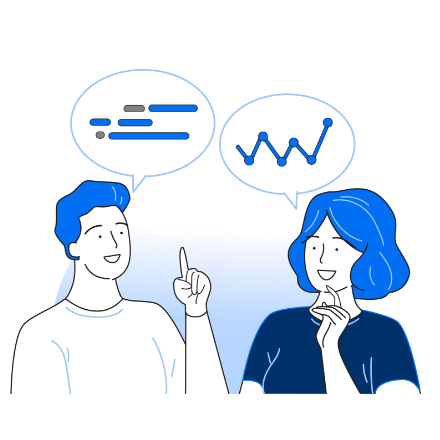
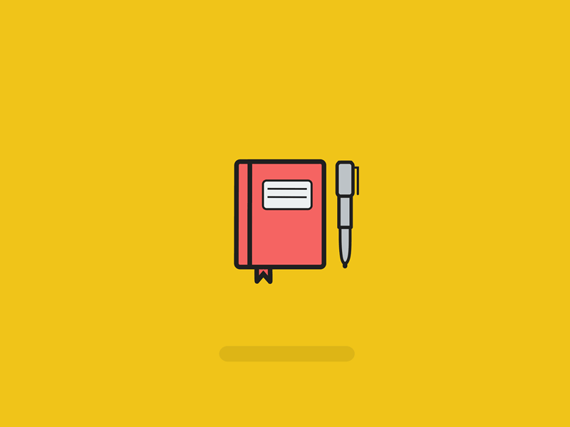
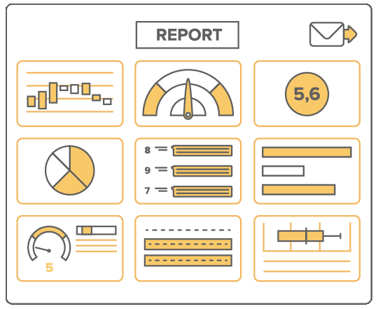

How Does It Works?
Productivity tracker in its essential steps:
choose the tasks, actually remember to do it, and track your development.
1. Set Up Your Goals
String together a list of tasks you need to do and start your journey.
2. Get the Cue
With multiple reminders,Stay accountable and never forget your tasks.

3. Check your Progress
Guage you productivity thorugh detailed weekly and monthly reports.


Leverage Your Productivity using animedoro
The Golden Keys to a Better Life. Translate your potential into concrete habits with a set of Freshtime features. Never forget your habits. Maintain your Streaks. Get an overview of Habit Calendars. View the Completion Rate. Document with Notes. Set Time goals for your habits.